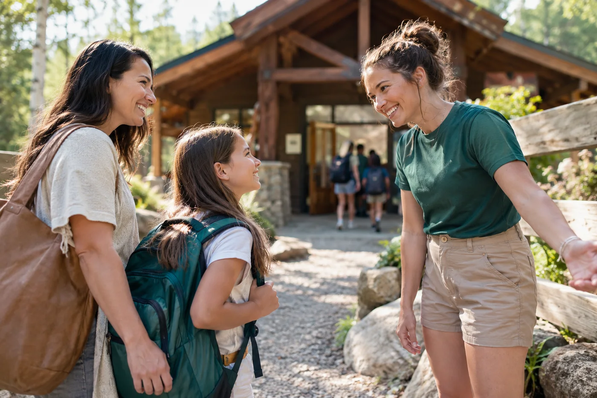

Parenting Tips
Little steps to a wonderful first day
A calm morning and a familiar routine can help your child feel ready for a new adventure.
Read the story
Make the unfamiliar feel familiar.
A new place brings new questions. Walk through the sample daily routine together, talk about arrival and pickup, and let your child choose a small practical task such as filling their water bottle. A little ownership can turn anticipation into readiness.
Leave room for their own story.
Some children share every detail on the way home; others need quiet first. Ask what surprised them, who helped them, or what they might like to try tomorrow. Celebrate the effort of beginning rather than expecting a perfect first day.